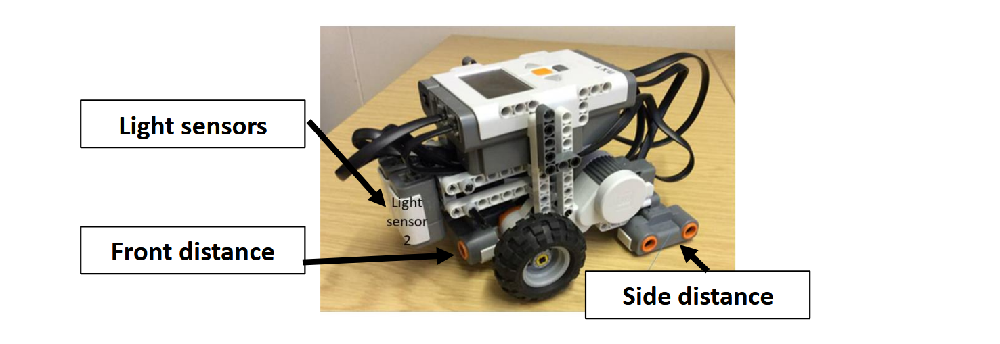
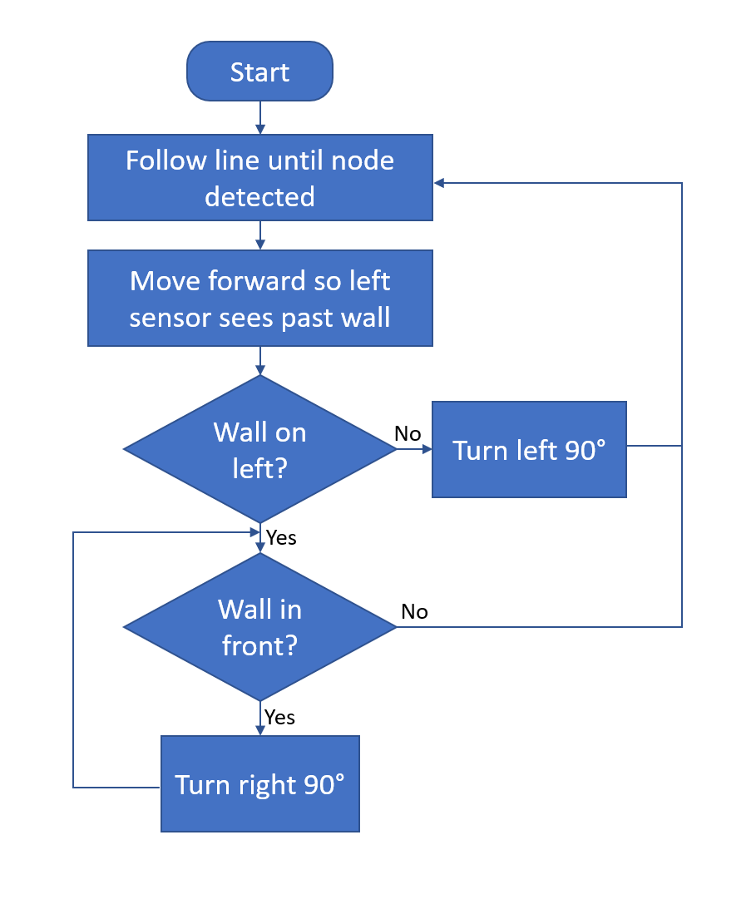
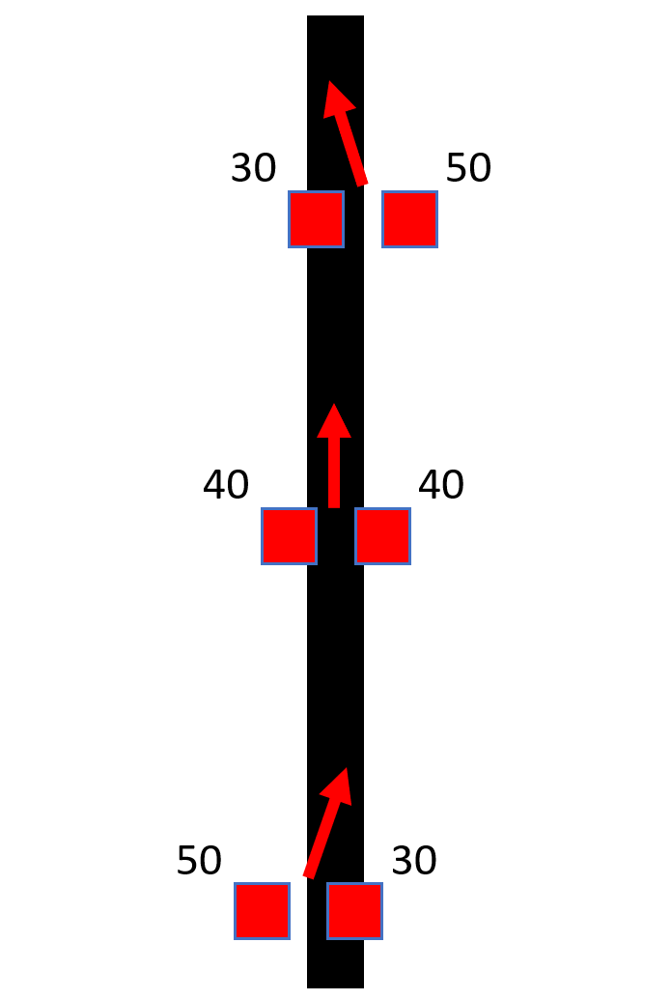
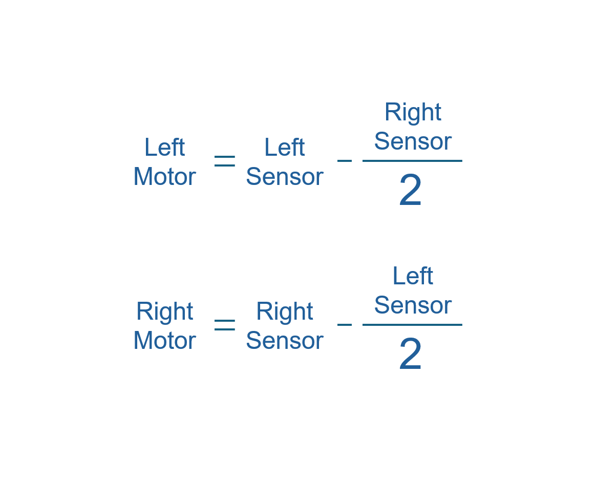
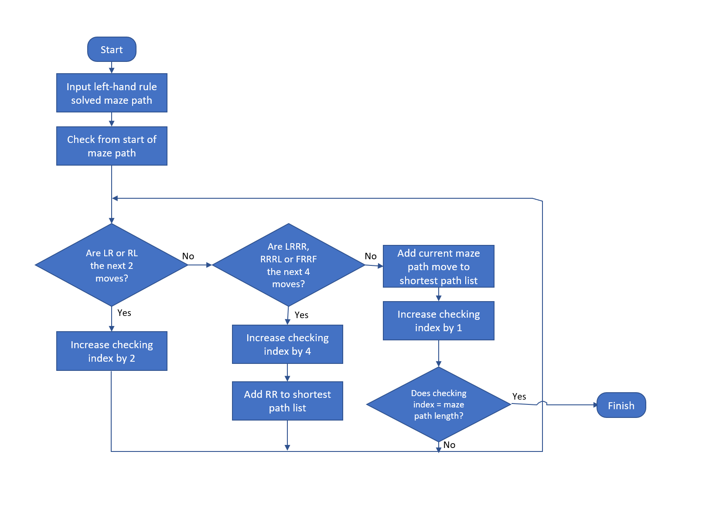
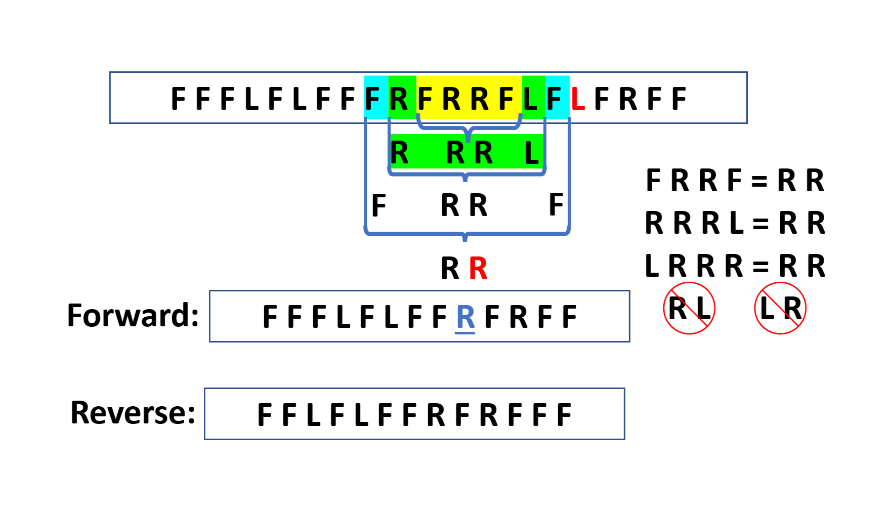

As a team of 3, we programmed a Lego Mindstorms robot using RobotC to autonomously navigate a maze, locate the finish, and return via the most efficient route. The robot had downward-facing light sensors to track tape guidelines on the maze floor, while front and side-mounted ultrasonic sensors provided wall detection and proximity data.
Our program used the left-hand rule algorithm, along with a route simplification algorithm that took the list of moves to complete the maze (forward, left turn or right turn) and iteratively reduced it based on a few simple rules to find the shortest path.
MAZE SOLVING
The left-hand rule turns left at any available opportunity. This can solve mazes which are 'simply connected', i.e: all walls are connected to the outer walls (no islands). Our line-following used the proportional difference between left and right light sensors to differentially drive the wheels based on how far off-line the robot was (halving the subtracted value to avoid negative wheel-speed and make movement less jerky).





SHORTEST RETURN PATH
Once the maze was solved using the left-hand rule, the stored movement sequence (Forward, Left, Right) was passed through a route simplification algorithm to find the shortest return path. This removed redundant movements by replacing u-turns (sequences like FRRF, RRRL, or LRRR) with two right turns, and eliminated consecutive L-R and R-L moves that cancel each other out.

